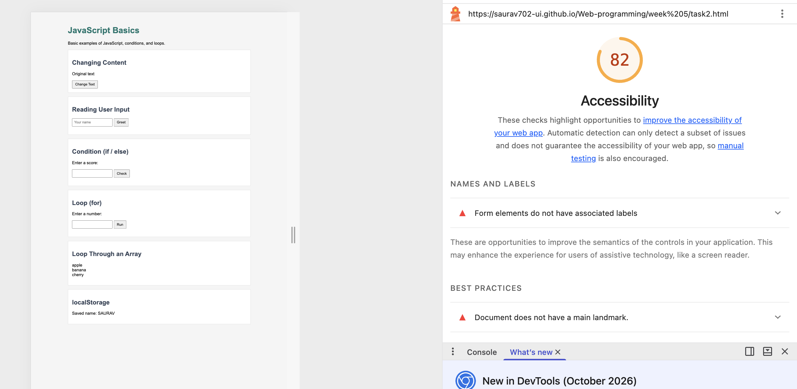

1. Introduction
I used Google Lighthouse to evaluate the accessibility of my personal portfolio website. I ran the audit with only the Accessibility category selected, once before and once after making improvements.
2. Before the Improvements
Initial Lighthouse accessibility score: 97/100
The report listed one failing item: “Document does not have a main landmark.”

3. After the Improvements
Final Lighthouse accessibility score: 100/100

4. Accessibility Fixes
Fix 1: Main Landmark
I wrapped the page content in a <main> element.
This gives screen reader users a landmark to jump to and fixes the
failing audit. The navigation and footer wordmark stay outside it.
HTML example:
<main id="main" tabindex="-1">
<!-- hero, assignments, about, contact -->
</main>Fix 2: Skip Link
I added a “Skip to main content” link as the first element in the body. It stays hidden until a keyboard user presses Tab, then appears so they can skip the navigation and go straight to the content.
HTML example:
<a class="skip-link" href="#main">Skip to main content</a>CSS example:
.skip-link {
position: absolute;
left: 8px;
top: -60px;
padding: 8px 16px;
background: #000;
color: #fff;
}
.skip-link:focus {
top: 8px;
}Fix 3: Keyboard Focus Indicator
I added a visible outline when a link receives keyboard focus. This helps keyboard users see which link is currently selected.
CSS example:
a:focus-visible {
outline: 3px solid #6b0f1a;
outline-offset: 3px;
}5. Conclusion
These improvements make my website easier to use for keyboard users and for people who use screen readers. The accessibility audit now reports a score of 100 out of 100, and the missing main landmark has been fixed.